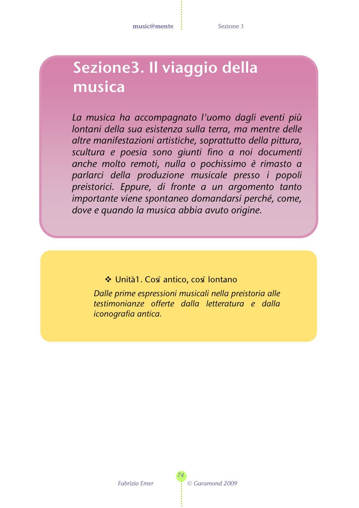

Le aree interattive corrispondono alle icone multimediali originali: fai clic per ascoltare.
Seleziona un esempio audio
Edizione locale · funziona senza connessione Internet. Gli esempi MIDI sono stati convertiti in MP3 per una riproduzione uniforme.